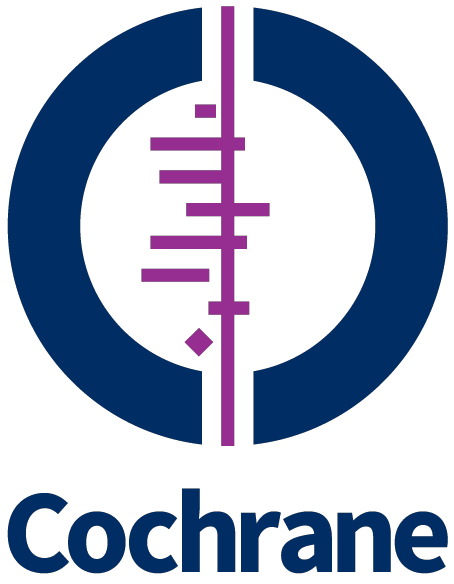
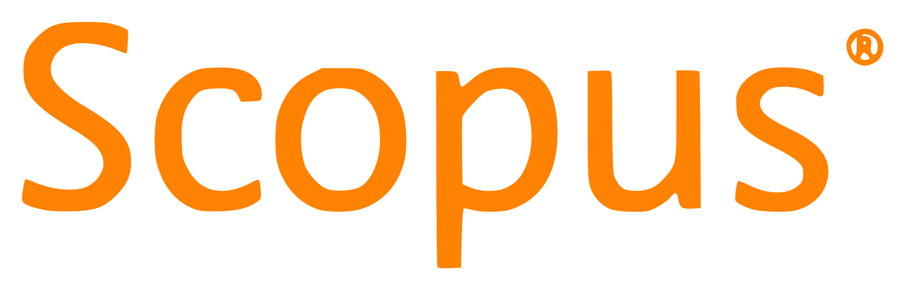
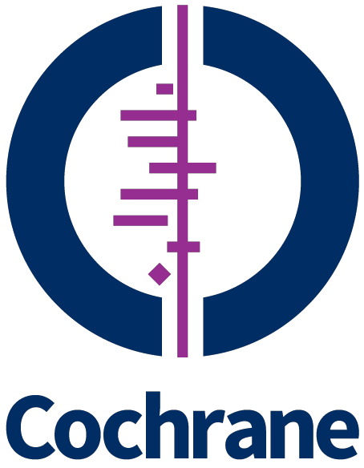
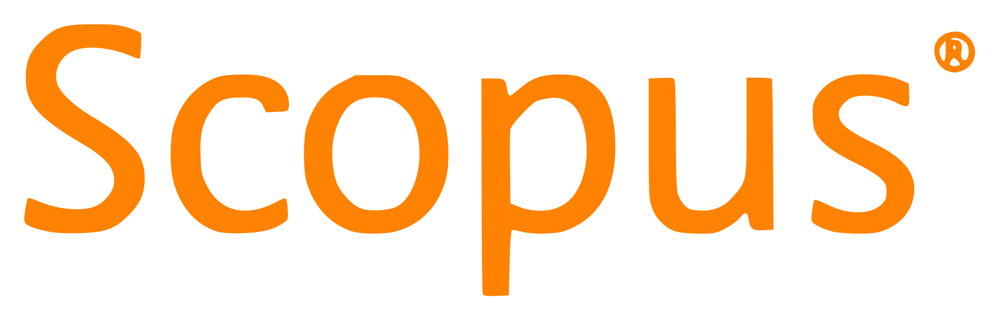
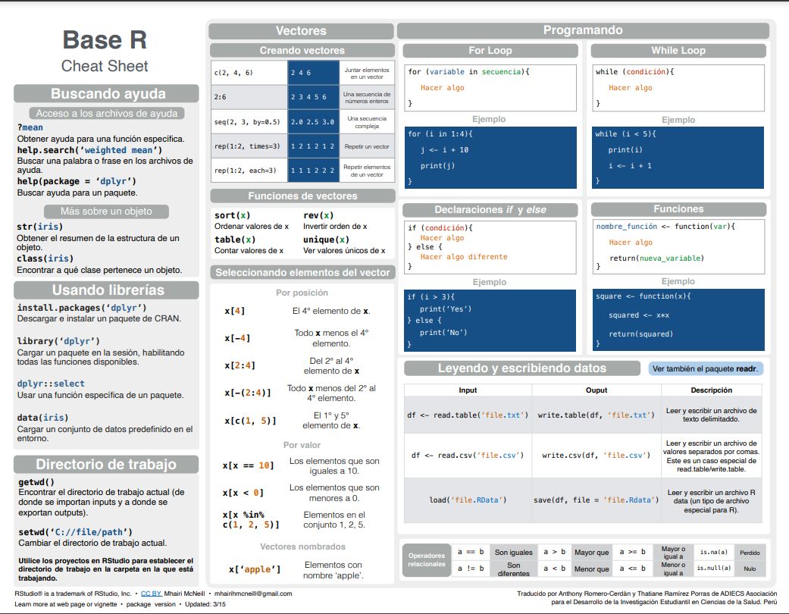

A few things about me
- RENACYT level VII researcher.
- I have collaborated in research projects with the Instituto de Evaluación de Tecnologías en Salud e Investigación - EsSalud for the last 12 months.
- I have basic skills in data management, analysis and visualization with R and Stata.
- I am part of the founding team of InkaStats Academy and a member of ADIECS since 2018.
- I am interested in Health Data Science, clinical research and Epidemiology applied to public health.
Academic information
University education
Universidad Nacional Mayor de San Marcos
Facultad de Medicina humana “San Fernando”, EA de Medicina humana
Lima, PE
2018 - present
Additional training
- Course: “Analysis of Sociodemographic Indicators with the ENAHO 2022-01”
Pontifica Universidad Católica del Perú, Facultad de Ciencias Sociales
Oct - Nov 2022
- Internship: “Summer Program in Clinical and Epidemiological Research”
Unidad de Investigación Multidisciplinaria de la Clínica Avendaño (UIMCA)
Ene - Feb 2022
- Course: “Clinical Case Report”
Instituto Nacional de Salud del Perú
Nov 2021
- Course: “Scientific writing”
Instituto Nacional de Salud del Perú
Nov 2021
- Course: “Elaboration of Research Protocols”
Instituto Nacional de Salud del Perú
Nov 2021
- Course: “Ethics in Research”
EsSalud - CITI Program
Sep 2021
- Course: “Skills – Professional Development”
Santander Scholarships - ESADE
Mar - May 2021
- Internship: “Epidemiological Research Summer Internship”
Unidad de Investigación para la Generación y Síntesis de Evidencias en Salud (IGSES-USIL)
Ene - Feb 2021
- Course: “How to conduct a review on interventions”.
Cochrane iberoamérica
Dic 2020
Participation in Congresses
- XXV Jornada Científica Regional Centro - Lima
Sociedad Científica Médico Estudiantil Peruana (SOCIMEP)
2022
- XXXIII Congreso Científico Nacional - Ucayali
Sociedad Científica Médico Estudiantil Peruana (SOCIMEP)
2019
- XVI Jornadas Científicas Sanfernandinas
Facultad de Medicina - Universidad Nacional Mayor de San Marcos
2018
- XII Congreso Científico Nacional del Instituto Nacional de Salud
Instituto Nacional de Salud del Perú
2018
Organizational Experience and Positions
- Junior advisor at the III UIGSES-USIL Summer Stay
2022
- Founding member of InkaStats Academy
2022
- Science communicator at CAPTA
2021 - 2022
- Founding professor of the ADIECS Biostatistics Assistantship.
2020 - present
- Member of ADIECS - UNMSM
2018 - present
- Organizing member of the I and II ADIECS Bibliographic Search Workshops ADIECS
2020 - 2021
- Secretary of Research of the Medical Students Center UNMSM
2020
- ADIECS Internal Development Director
2020
- Organizing member of the I Scientific Conference: “COVID-19 and the lessons learned from 9 months of pandemic lessons learned in 9 months of pandemic”
2020
Technical skills
Technologies
Languages:


Softwares:


Reference managers:
Academic search engines:
  
 
Languages
Skill
Reading
Listening
Writing
Speaking
Spanish
Native
Native
Native
Native
English
B1
B1
B1
B1
Portuguese
B2
B2
B2
B2
References
Percy Soto Becerra, MD, MSc(c)
Instituto de Evaluación de Tecnologías en Salud e Investigación - IETSI-EsSalud
- Email: percys1991@gmail.com
Lima, PE
Research Associate
Paquita Crismalú Díaz Sánchez, MD, MSc(c)
Instituto de Evaluación de Tecnologías en Salud e Investigación - IETSI-EsSalud
- Email: pcdiazs@gmail.com
Lima, PE
Research Associate
Diego Urrunaga Pastor, MD, MSc(c)
Universidad San Ignacio de Loyola
- Email: diego.urrunaga.pastor1@gmail.com
Lima, PE
Research Associate
Traslated Cheatsheets
Here you will find the R cheatsheets that I have translated with Percy Soto (my R mentor) and some friends.
Publications
You can find my academic publications in my  Orcid and Scholar profiles.
Orcid and Scholar profiles.
| title | author | journal | number | cites | year |
|---|---|---|---|---|---|
| The neutrophil-to-Lymphocyte ratio and the platelet-to-Lymphocyte ratio as predictors of mortality in older adults hospitalized with COVID-19 in Peru | S Ortega-Rojas, L Salazar-Talla, A Romero-Cerdán, P Soto-Becerra, … | Disease Markers | 2022 | 3 | 2022 |
| Alineamiento de la producción científica a las prioridades de investigación en el Seguro Social de Salud del Perú: Propuesta de fortalecimiento y descentralización de la … | CA Alarcon-Ruiz, A Benites-Bullón, B Solis-Chimoy, FL Sedano-Chiroque, … | Revista del Cuerpo Médico Hospital Nacional Almanzor Aguinaga Asenjo | 15 (2 … | 2 | 2022 |
| NLR y PLR como predictores de mortalidad en adultos mayores hospitalizados con Covid-19 en Lambayeque, 2020: reporte de resultados de investigación. Reporte de Resultados de … | D Urrunaga Pastor, S Ortega Rojas, LC Salazar Talla, … | Seguro Social de Salud (EsSalud) | 0 | 2022 | |
| Risk factors for mortality in hospitalized patients with COVID-19 from three hospitals in Peru: a retrospective cohort study | C Díaz-Vélez, D Urrunaga-Pastor, A Romero-Cerdán, ER Peña-Sánchez, … | F | F1000Research 10 | 21 | 2021 |
| Producción científica y redes de colaboración en la Seguridad Social del Perú (EsSalud): Análisis bibliométrico 2008-2020 | CA Alarcón-Ruiz, AG Cortez-Soto, A Romero-Cerdan, A Benites-Bullón, … | Revista del Cuerpo Médico Hospital Nacional Almanzor Aguinaga Asenjo | 14 (2 … | 7 | 2021 |
| Scientific production and collaborative networks in peruvian social security (EsSalud): Bibliometric analysis 2008-2020 | CA Alarcón-Ruiz, AG Cortez-Soto, A Romero-Cerdan, A Benites-Bullón, … | 2 | 2021 | ||
| Risk factors for mortality in hospitalized patients with COVID-19 from three hospitals in Peru: A retrospective cohort study | D Urrunaga-Pastor, C Díaz-Vélez, A Romero-Cerdán, ER Peña-Sánchez, … | 1 | 2021 | ||
| Características de los registros diagnósticos de preeclampsia en el Perú | V Moquillaza-Alcántara, O Munares-García, A Romero-Cerdán | Rev Obstet Ginecol Venez | 80 (1), 32-36 | 14 | 2020 |
| Variación de los indicadores epidemiológicos del COVID-19 a partir de las políticas de emergencia adoptadas en países sudamericanos | V Moquillaza-Alcántara, A Romero-Cerdán, O Munares-García, … | SciELO Preprints | 3 | 2020 | |
| Variation in the epidemiological indicators of COVID-19 a part of the emergency policies adopted in south american countries | V Moquillaza-Alcántara, A Romero-Cerdán, O Munares-García, … | Variation in the epidemiological indicators of COVID- | -19 a part of the … | 3 | 2020 |
| Impacto de las redes sociales en la salud de las personas | V Moquillaza-Alcántara, A Romero-Cerdan | Revista Internacional de Salud Materno Fetal | 4 (3), 29-30 | 3 | 2019 |
| Publicación sobre ultrasonido obstétrico: Valores bibliométricos de revistas indexadas en Scopus | VH Moquillaza Alcántara, GA Romero Cerdán | 0 | 2018 | ||
| Risk factors for mortality in hospitalized patients with COVID-19 from three hospitals in Peru: a retrospective cohort study [version 1; peer review: 2 approved] | C Díaz-Vélez, D Urrunaga-Pastor, A Romero-Cerdán, E Peña-Sánchez, … | F | 1 (0) | 3 | NA |
| Alineamiento de la producción científica a las prioridades de investigación en el Seguro Social de Salud del Perú: Propuesta de fortalecimiento y descentralización de la … | PHA Becerra, M Apolaya-Segura, JL Maguiña | investigación | 13, 1 | 0 | NA |
| Risk factors for mortality in hospitalized patients with COVID-19 from three hospitals in Peru: a retrospective cohort study (preprint) | C Díaz-Vélez, D Urrunaga-Pastor, A Romero-Cerdán, ER Peña-Sánchez, … | 0 | NA |
Algunas cosas sobre mí
- Investigador RENACYT nivel VII.
- He colaborado en proyectos de investigación con el Instituto de Evaluación de Tecnologías en Salud e Investigación - EsSalud durante los últimos 12 meses.
- Tengo habilidades básicas en gestión, análisis y visualización de datos con R y Stata.
- Soy parte del equipo fundador de InkaStats Academy y miembro de ADIECS desde el 2018.
- Me interesan la Ciencia de Datos en Salud, la Investigación clínica y la Epidemiología aplicada a la salud pública.
Información académica
Formación universitaria
Universidad Nacional Mayor de San Marcos
Facultad de Medicina humana “San Fernando”, EA de Medicina humana
Lima, PE
2018 - actualidad
Formación adicional
- Curso: “Análisis de Indicadores Sociodemográficos con la ENAHO 2022-01”
Pontifica Universidad Católica del Perú, Facultad de Ciencias Sociales
Oct - Nov 2022
- Pasantía: “Programa de Verano en Investigación Clínica y Epidemiológica”
Unidad de Investigación Multidisciplinaria de la Clínica Avendaño (UIMCA)
Ene - Feb 2022
- Curso: “Reporte de Casos clínicos”
Instituto Nacional de Salud del Perú
Nov 2021
- Curso: “Redacción científica”
Instituto Nacional de Salud del Perú
Nov 2021
- Curso: “Elaboración de Protocolos de Investigación”
Instituto Nacional de Salud del Perú
Nov 2021
- Curso: “Ética en Investigación”
EsSalud - CITI Program
Sep 2021
- Curso: “Skills – Professional Development”
Santander Scholarships - ESADE
Mar - May 2021
- Pasantía: “Estancia de Verano en Investigación Epidemiológica”
Unidad de Investigación para la Generación y Síntesis de Evidencias en Salud (IGSES-USIL)
Ene - Feb 2021
- Curso: “Cómo realizar una revisión sobre intervenciones”
Cochrane iberoamérica
Dic 2020
Participación en Congresos
- XXV Jornada Científica Regional Centro - Lima
Sociedad Científica Médico Estudiantil Peruana (SOCIMEP)
2022
- XXXIII Congreso Científico Nacional - Ucayali
Sociedad Científica Médico Estudiantil Peruana (SOCIMEP)
2019
- XVI Jornadas Científicas Sanfernandinas
Facultad de Medicina - Universidad Nacional Mayor de San Marcos
2018
- XII Congreso Científico Nacional del Instituto Nacional de Salud
Instituto Nacional de Salud del Perú
2018
Experiencia en Organización y Cargos
- Asesor junior en la III Estancia de verano de la UIGSES-USIL
2022
- Miembro fundador de InkaStats Academy
2022
- Divulgador científico en CAPTA
2021 - 2022
- Docente fundador en la Ayudantía de Bioestadística de ADIECS
2020 - Actualidad
- Miembro de ADIECS - UNMSM
2018 - Actualidad
- Miembro organizador del I y II Taller de Búsqueda Bibliográfica de ADIECS
2020 - 2021
- Secretario de Investigación del Centro de Estudiantes de Medicina UNMSM
2020
- Director de Desarrollo interno de ADIECS
2020
- Miembro organizador del I Conversatorio científico: “COVID-19 y las lecciones aprendidas en 9 meses de pandemia”
2020
Habilidades técnicas
Tecnologías
Lenguajes:


Softwares:


Gestores de referencia:
Buscadores académicos:

Idiomas
Skill
Reading
Listening
Writing
Speaking
Español
Nativo
Nativo
Nativo
Nativo
Inglés
B1
B1
B1
B1
Portugués
B2
B2
B2
B2
Referencias
Percy Soto Becerra, MD, MSc(c)
Instituto de Evaluación de Tecnologías en Salud e Investigación - IETSI-EsSalud
- Email: percys1991@gmail.com
Lima, PE
Investigador asociado
Paquita Crismalú Díaz Sánchez, MD, MSc(c)
Instituto de Evaluación de Tecnologías en Salud e Investigación - IETSI-EsSalud
- Email: pcdiazs@gmail.com
Lima, PE
Investigadora asociada
Diego Urrunaga Pastor, MD, MSc(c)
Universidad San Ignacio de Loyola
- Email: diego.urrunaga.pastor1@gmail.com
Lima, PE
Investigador asociado
Cheatsheets traducidos
Aquí encontrarás los Cheatsheets de R que he traducido junto a Percy Soto (mi mentor en R) y algunos amigos/as.

Publicaciones
Puedes encontrar mis publicaciones en mis perfiles de Orcid y Scholar.
| title | author | journal | number | cites | year |
|---|---|---|---|---|---|
| The neutrophil-to-Lymphocyte ratio and the platelet-to-Lymphocyte ratio as predictors of mortality in older adults hospitalized with COVID-19 in Peru | S Ortega-Rojas, L Salazar-Talla, A Romero-Cerdán, P Soto-Becerra, … | Disease Markers | 2022 | 3 | 2022 |
| Alineamiento de la producción científica a las prioridades de investigación en el Seguro Social de Salud del Perú: Propuesta de fortalecimiento y descentralización de la … | CA Alarcon-Ruiz, A Benites-Bullón, B Solis-Chimoy, FL Sedano-Chiroque, … | Revista del Cuerpo Médico Hospital Nacional Almanzor Aguinaga Asenjo | 15 (2 … | 2 | 2022 |
| NLR y PLR como predictores de mortalidad en adultos mayores hospitalizados con Covid-19 en Lambayeque, 2020: reporte de resultados de investigación. Reporte de Resultados de … | D Urrunaga Pastor, S Ortega Rojas, LC Salazar Talla, … | Seguro Social de Salud (EsSalud) | 0 | 2022 | |
| Risk factors for mortality in hospitalized patients with COVID-19 from three hospitals in Peru: a retrospective cohort study | C Díaz-Vélez, D Urrunaga-Pastor, A Romero-Cerdán, ER Peña-Sánchez, … | F | F1000Research 10 | 21 | 2021 |
| Producción científica y redes de colaboración en la Seguridad Social del Perú (EsSalud): Análisis bibliométrico 2008-2020 | CA Alarcón-Ruiz, AG Cortez-Soto, A Romero-Cerdan, A Benites-Bullón, … | Revista del Cuerpo Médico Hospital Nacional Almanzor Aguinaga Asenjo | 14 (2 … | 7 | 2021 |
| Scientific production and collaborative networks in peruvian social security (EsSalud): Bibliometric analysis 2008-2020 | CA Alarcón-Ruiz, AG Cortez-Soto, A Romero-Cerdan, A Benites-Bullón, … | 2 | 2021 | ||
| Risk factors for mortality in hospitalized patients with COVID-19 from three hospitals in Peru: A retrospective cohort study | D Urrunaga-Pastor, C Díaz-Vélez, A Romero-Cerdán, ER Peña-Sánchez, … | 1 | 2021 | ||
| Características de los registros diagnósticos de preeclampsia en el Perú | V Moquillaza-Alcántara, O Munares-García, A Romero-Cerdán | Rev Obstet Ginecol Venez | 80 (1), 32-36 | 14 | 2020 |
| Variación de los indicadores epidemiológicos del COVID-19 a partir de las políticas de emergencia adoptadas en países sudamericanos | V Moquillaza-Alcántara, A Romero-Cerdán, O Munares-García, … | SciELO Preprints | 3 | 2020 | |
| Variation in the epidemiological indicators of COVID-19 a part of the emergency policies adopted in south american countries | V Moquillaza-Alcántara, A Romero-Cerdán, O Munares-García, … | Variation in the epidemiological indicators of COVID- | -19 a part of the … | 3 | 2020 |
| Impacto de las redes sociales en la salud de las personas | V Moquillaza-Alcántara, A Romero-Cerdan | Revista Internacional de Salud Materno Fetal | 4 (3), 29-30 | 3 | 2019 |
| Publicación sobre ultrasonido obstétrico: Valores bibliométricos de revistas indexadas en Scopus | VH Moquillaza Alcántara, GA Romero Cerdán | 0 | 2018 | ||
| Risk factors for mortality in hospitalized patients with COVID-19 from three hospitals in Peru: a retrospective cohort study [version 1; peer review: 2 approved] | C Díaz-Vélez, D Urrunaga-Pastor, A Romero-Cerdán, E Peña-Sánchez, … | F | 1 (0) | 3 | NA |
| Alineamiento de la producción científica a las prioridades de investigación en el Seguro Social de Salud del Perú: Propuesta de fortalecimiento y descentralización de la … | PHA Becerra, M Apolaya-Segura, JL Maguiña | investigación | 13, 1 | 0 | NA |
| Risk factors for mortality in hospitalized patients with COVID-19 from three hospitals in Peru: a retrospective cohort study (preprint) | C Díaz-Vélez, D Urrunaga-Pastor, A Romero-Cerdán, ER Peña-Sánchez, … | 0 | NA |